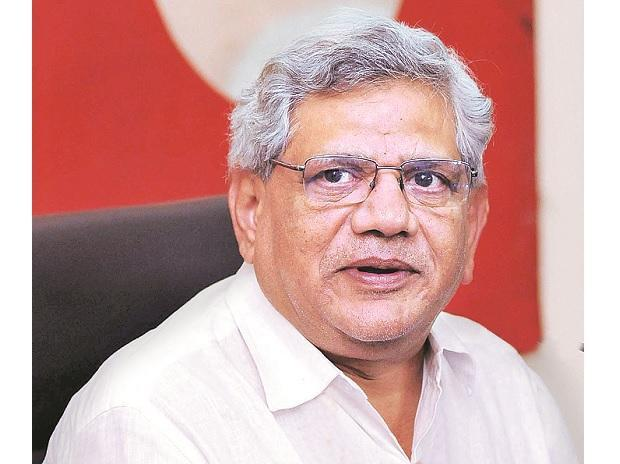

A Life of Study, Struggle and Solidarity
He brought together Marxist theory and the living realities of people’s struggles, always insisting on the need for a ‘concrete understanding of concrete conditions’.
He brought together Marxist theory and the living realities of people’s struggles, always insisting on the need for a ‘concrete understanding of concrete conditions’.

Sitaram Yechury was born on 12 August 1952 in Madras (now Chennai), to Sarveswara Somayajula Yechury and Kalpakam Yechury. After completing his Class X at All Saints High School in Hyderabad, he moved to New Delhi and continued his education at the President’s Estate School. He soon distinguished himself academically, securing the first position in the Central Board of Secondary Education’s higher secondary examinations.
He went on to a B.A. (Hons.) in Economics at St. Stephen’s College, Delhi, followed by an M.A. in Economics at Jawaharlal Nehru University. He subsequently enrolled in a Ph.D. programme at JNU, but the research was never completed. The Emergency intervened: his arrest by the state brought his academic work to an abrupt halt.
The period that sought to silence dissent became a decisive turning point in his political life. Between 1977 and 1978, in the aftermath of the Emergency, he was elected President of the JNU Students’ Union three times — a record unique in the university’s history, with the three elections taking place within just ten months.
As JNUSU President he emerged as a prominent leader in the struggle that eventually forced Indira Gandhi to resign as the university’s Chancellor. When students refused to allow the then Vice-Chancellor to enter the campus, the government ordered the university’s closure. But students and faculty refused to let JNU fall silent: for nearly 40 days, classes were held, the mess remained open and the library operated round the clock.
Even after her defeat in the 1977 Lok Sabha election, Indira Gandhi had continued to hold the post of Chancellor. Led by Yechury, around 500 students marched to her residence demanding her resignation. When her aide said only five students could enter, they refused. Indira Gandhi eventually came out herself. Yechury read out their resolution — a long catalogue of grievances — which she heard stoically before accepting it from him. A couple of days later, she resigned.
In the 1970s, as editor of Students’ Struggle, he first showed his remarkable ability to document and preserve the history of the communist movement. He was elected Joint Secretary of the Students’ Federation of India in 1978 and later its national President from 1984 to 1986, playing an important role in developing the organisation into an all-India force.
He joined the CPI(M) in 1975 and was arrested during the Emergency for his political activities. He became a permanent invitee to the Central Committee in 1984 and was elected to the Central Committee in 1985 at the 12th Congress. He was elected to the Central Secretariat in 1989, and to the Polit Bureau in 1992 at the 14th Congress — remaining a member of the Polit Bureau until his death.
In the turbulent 1980s — with sectarian movements in Assam and Punjab, the BJP stoking the flames of communalism, and the Congress besieged by corruption and internal crises — Sitaram rose under the guidance of senior leaders. His training under Harkishan Singh Surjeet, E. M. S. Namboodiripad and Jyoti Basu, and his experience during the National Front government (1989–91), equipped him to forge common ground across a broad spectrum of democratic and secular forces.
He was respected by all for his political integrity and commitment, which earned him a wide circle of friends across the political spectrum and in all walks of life.
As head of the International Department of the Central Committee, he took part in international forums of Communist and progressive forces, strengthened relations with socialist countries and built solidarity with anti-imperialist movements.
When the CPI(M) was formed in 1964, it initially faced isolation within the international communist movement. The Party remained firm in its convictions, and its independent, principled approach gradually enabled it to build relations with Communist and Workers’ Parties across the world. Sitaram played a vital role in this process — going beyond formal party-to-party relations to engage deeply with the ideological positions, political experiences and organisational practices of fraternal parties.
The struggle for Palestine stood at the heart of this anti-imperialist politics. He carried it into Parliament and the public arena — opposing the Israeli occupation, defending the Palestinian people’s right to self-determination, challenging India’s growing military ties with Israel, and, as Gaza came under repeated assault, demanding an immediate ceasefire and an end to the occupation.
After the collapse of the Soviet Union in 1991, the Party had to critically assess this historic setback for socialism. The process culminated at the 14th Party Congress in Madras in 1992, which adopted the resolution On Certain Ideological Issues. Sitaram played a central role in piloting the resolution and summing up the discussion. From then on he emerged as the principal force within the Polit Bureau on ideological matters.
After the demolition of the Babri Masjid on 6 December 1992, he wrote What is this Hindu Rashtra? (published by N. Ram of Frontline, 1993), a pamphlet that mercilessly exposed the communal, casteist and fascist arguments of M. S. Golwalkar’s We, or Our Nationhood Defined. As editor of the Party weekly People’s Democracy for more than two decades, and through works such as Communalism vs Secularism, he developed a sharp Marxist critique of Hindutva.
As a member of the Programme Commission headed by Harkishan Singh Surjeet, he contributed — particularly on political economy and neoliberalism — to the revision of the Party Programme adopted at the Special Conference in Thiruvananthapuram in 2000.
In 1996, a fractured mandate created the conditions for the United Front government. Working closely with Harkishan Singh Surjeet, Sitaram helped bring diverse forces together around H. D. Deve Gowda as Prime Minister, and with P. Chidambaram was closely involved in drafting the Common Minimum Programme. When that government fell, he again helped build the consensus that led to I. K. Gujral becoming Prime Minister.
That experience of patient negotiation proved invaluable in 2004, when the Left extended outside support to the UPA government on the basis of a Common Minimum Programme. Sustained pressure from the Left during UPA-I helped secure MGNREGA, the Forest Rights Act, the Right to Information Act, the Right to Education Act, a partial farm loan waiver, and a partial check on the privatisation of public sector enterprises.
In his final years, particularly in 2023–24, he worked persistently to bring Left and secular forces together in the INDIA alliance — building bridges across differences without diluting the political character of the Left.
Sitaram Yechury represented West Bengal in the Rajya Sabha for twelve years, from 2005 to 2017. His tenure spanned three distinct phases: support for the UPA-I government, opposition to UPA-II, and finally staunch opposition to the BJP-led NDA.
Through incisive, meticulously argued interventions on a wide range of issues, he articulated the CPI(M) and Marxist perspective with clarity and conviction. His command of issues, parliamentary skill and ability to advance a principled argument earned him respect even from the opposite benches. In 2015 he mobilised the Opposition in the Rajya Sabha against the Land Acquisition Ordinance which, together with the Bhumi Adhikar Andolan outside, forced the government to withdraw it.
Sitaram Yechury was elected the fifth General Secretary of the Communist Party of India (Marxist) at the 21st Party Congress in Visakhapatnam in 2015, and re-elected at the 22nd Congress in Hyderabad (2018) and the 23rd Congress in Kannur (2022).
He assumed leadership at a critical juncture, when the growing fascist tendencies of Hindutva posed an increasingly serious threat to secularism, democracy and social justice. As a principled communist he worked consistently to unite the Left and democratic forces in defence of the Constitution.
As General Secretary he always upheld the importance of debate within the Party and inner-party democracy, followed by collective decisions and organisational discipline. His adherence to this principle played an important role in maintaining Party unity throughout his tenure.
He played a key role in the joint peasant struggle against the Land Acquisition Ordinance in 2015, and in the united peasant–worker struggle against the three Farm Laws in 2020–21, mobilising broad opposition support for the Bharat Bandhs and other calls of the peasant movement.
His solidarity with the struggle against the Citizenship Amendment Act, the women wrestlers’ movement and other democratic mass struggles reflected his commitment to building broad-based resistance against communalism, authoritarianism and the assault on democratic rights. When JNU became a site of confrontation after 2014, he carried the campus struggle into the national political arena.
He tirelessly worked to strengthen Left unity — rooted in common political action, class struggle and mass mobilisation — while respecting the distinct identity of each organisation.
Yechury was a steadfast defender of secularism and the plural character of the Indian Republic. He understood democracy and secularism as inseparable — any assault on one inevitably weakened the other. Religion, he held, is a matter of individual faith that must not be converted into an instrument of political mobilisation or state power.
He approached Jammu and Kashmir from the standpoint of its people and their democratic rights — helping the Party’s relief work during the 2014 floods, arguing for dialogue during the 2016 turmoil, and resolutely opposing the abrogation of Articles 370 and 35-A in August 2019. When Kashmiri leaders were detained, he approached the Supreme Court for permission for Mohammad Yousuf Tarigami to travel to Delhi for treatment, bringing the denial of democratic rights in Kashmir into the national discourse.
Representing West Bengal in the Rajya Sabha from 2005 to 2017, he remained closely engaged with the state’s political life. He was particularly concerned with the erosion of democratic institutions and repeatedly raised concerns over the conduct of elections, insisting that the Election Commission must ensure free and fair polls and safeguard the democratic rights of the people.
He was uncompromising in confronting the authoritarian politics of the Trinamool Congress, including the violence directed at CPI(M) workers and supporters, while warning against the advance of communal polarisation and its assault on Bengal’s secular and democratic traditions. For him, defending Bengal’s political and social fabric was inseparable from the larger battle to protect India’s constitutional foundations.
Sitaram understood communism as a struggle encompassing the whole of human life. His engagement with literature, cinema, music, sport and culture reflected the Marxist belief that human creativity must be freed from exploitation and alienation.
His knowledge of music was remarkable. He could speak at length about Paul Robeson, Bob Marley, Harry Belafonte, M. Balamuralikrishna, Mohammed Rafi, Lata Mangeshkar and Victor Jara — understanding their music alongside their lives, convictions and struggles.
He carried the politics of communism beyond its familiar circles. His scholarship never distanced him from people; his warmth and clarity brought political ideas into everyday conversation.
A good Communist must first be a good human being.
His erudition, simplicity, warmth, humour and accessibility were inseparable from the communist politics he practised. Amid the immediate battles of the day, he remained anchored to the fundamental objective: overcoming exploitation and the rule of capital and advancing the struggle for socialism. His life gave concrete meaning to that principle — and left behind a responsibility to carry the struggle forward.
The ship sails on. The struggle continues.Born on 12 August in Madras.
Joins the Students’ Federation of India.
Joins the CPI(M); arrested during the Emergency.
Elected JNU Students’ Union President three times in ten months; leads the march that sees Indira Gandhi resign as JNU Chancellor.
Elected Joint Secretary of the SFI.
National President of the SFI. Permanent invitee to the CPI(M) Central Committee (1984).
Elected to the Central Committee at the 12th Congress.
Elected to the Central Secretariat.
Elected to the Polit Bureau at the 14th Congress, Madras; pilots the resolution On Certain Ideological Issues.
Publishes What is this Hindu Rashtra?
Helps draft the Common Minimum Programme of the United Front government.
Updated Party Programme adopted at the Special Conference, Thiruvananthapuram.
Elected to the Rajya Sabha from West Bengal (served until 2017).
Elected General Secretary at the 21st Congress, Visakhapatnam.
Re-elected at the 22nd Congress, Hyderabad.
Re-elected at the 23rd Congress, Kannur.
Passes away on 12 September in New Delhi, while preparing the draft for the 24th Congress.
Text adapted from A Life of Study, Struggle and Solidarity, the special-edition flip-book of The Left Views.